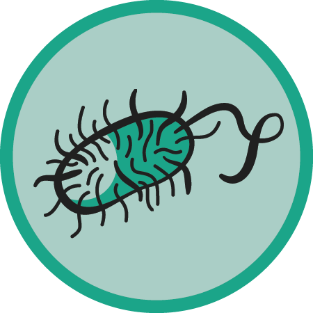

Would you like to access the curriculum material associated with these merit badges?
Yes No, thank you.Food Foundations
- The techniques required to prepare whole foods encompass applied math and science.
- Food choices greatly impact our health and wellbeing.
- Practicing kitchen safety prevents accidents and injury.
- Food safety and sanitation help to prevent disease.
- Bacteria are everywhere, good and bad.
Choose which curriculum material you're interested in downloading:

- Food Safety and Sanitation
- ● 101: Handwashing & The 4 Steps for Home Food Safety
- ● 102: Friend or Foe? Food and Bacteria
- ● 103: Growing Bacteria & FATTOM
- Recipe Reading
- ● Decoded: Parts of a Recipe & Recipe Language
- ● Kitchen Equipment & Technology
- Kitchen Math
- ● Recipe Math & Measurement
- Nutrition Detective
- ● Nutrition Facts Labels
- ● Make MyPlate Your Plate
- ● Micro & Macro Nutrients
- Kitchen Essentials
- ● Knife Skills
- ● Kitchen Lab Safety